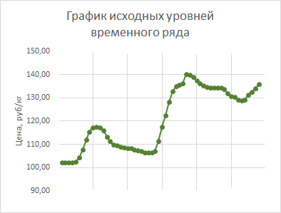
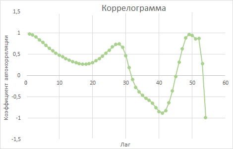
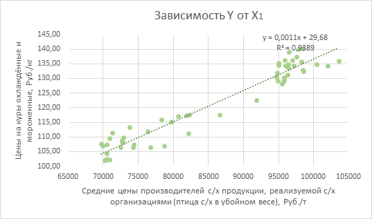
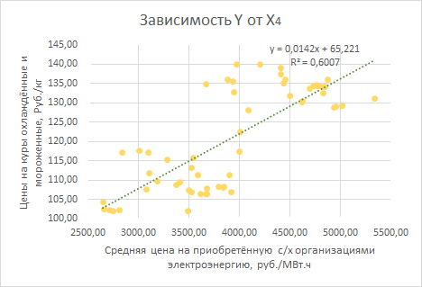
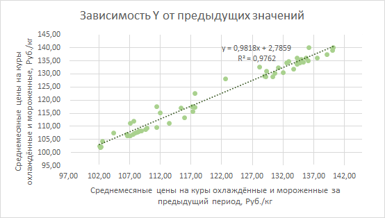

-
Источник
Работа выполнена в команде в рамках проектной деятельности на 2 курсе бакалавриата (первая половина 2021 года). Задание состояло в построении эконометрической модели и исследовании проблемы автокорреляции (первого порядка) случайных отклонений с помощью тестов Бреуша-Годфри, Сведа-Эйзенхарта и статистики Дарбина-Уотсона.По данным маркетингового исследования ЭКЦ «ИНВЕСТ-ПРОЕКТ» в 2020 году российский рынок мяса и мясопродуктов являлся самым крупным сегментом отечественного продовольственного рынка как по ёмкости, так и по числу его участников. При этом половина всей продукции приходилась в тот момент на куриную. Поэтому в рамках проекта командой было принято решение в качестве анализируемого набора данных использовать потребительские цены в России на куры охлаждённые и мороженные. Cтатистические данные собраны из витрины данных Росстата по месяцам, начиная с января 2012 года по декабрь 2016. -
Цель и задачи
Целью проекта являлось исследование временных данных зависимости средних потребительских цен в России на куры охлаждённые и мороженные от средних цен производителей с/х продукции, реализуемой с/х организациями, поголовья птицы, средней цены на приобретённые с/х организациями автомобильный бензин и дизельное топливо, средней цены на приобретённую с/х организациями электроэнергию, индекса уверенности потребителя, числа торговых мест на рынке по продаже продуктов питания.Также были сформулированы следующие задачи:
— сбор необходимых статистических данных по месяцам
— формирование данных в виде таблицы для их анализа в программе Microsoft Excel
— построение эконометрической модели исследуемой зависимости
— исследование проблемы автокорреляции первого порядка случайных отклонений в эконометрической модели исследуемой зависимости с помощью тестов Бреуша-Годфри, Сведа-Эйзенхарта, Дарбина-Уотсона
— построение прогноза средних потребительских цен в России на куры охлаждённые и мороженные на 2 последних месяца (ноябрь и декабрь) 2016 года и сравнение полученных данных с реальными значениями. -
Методы
Парная линейная регрессия
Коррелограмма
Аддитивная модель временного ряда
Автокорреляция
Многофакторная регрессия -
Инструменты
Microsoft Excel
Надстройки КОРРЕЛЯЦИЯ и РЕГРЕССИЯ пакета анализа в Microsoft Excel -
Результат
В результате исследования было построено 10 моделей. Среди этих моделей единственной, где отсутствует автокорреляция остатков, является зависимость средних потребительских цен на куры охлаждённые и мороженные от двух предыдущих значений, то есть цены постоянно растут.Рост цен не заисит от рассматриаемых в работе факторов:
— средних цен производителей с/х продукции, реализуемой с/х организациями
— поголовья птицы
— средней цены на приобретённые с/х организациями автомобильный бензин и дизельное топливо
— средней цены на приобретённую с/х организациями электроэнергию
— индекса уверенности потребителя (степень оптимизма относительно состояния экономики, который население выражает через своё потребление и сбережение; основывается на опросах, проодимых Росстатом)
— числа торговых мест на рынке по продаже продуктов питания. -
Скачать файл с проектом (ссылка)
-
Описание
На первом этапе был исследован временной ряд Yt на наличие сезонных колебаний и характер тенденции. Для этого был построен график исходных уровней временного ряда (изображение снизу слева), на основе которого была выдвинута гипотеза о наличии сезонных колебаний. Для подтверждения или опровержения выдвинутой гипотезы была построена коррелограмма (изображение снизу справа), которая показала отсутствие сезонной компоненты. В итоге была получена аддитивна модель временного ряда содержащая компоненту T (тенденцию) и E (ошибку). Эта модель представлена в конце описания в итоговой таблице.Выявление зависимости результативного признака от одного из рассматриваемых факторов проводилось на этапах 2-7. Для этого были построены модели парной регрессии, представляющие собой зависимость цен на куры охлаждённые и мороженные от средних цен производителей с/х продукции, реализуемой с/х организациями; поголовья птицы; средней цены на приобретённые с/х организациями автомобильный бензин и дизельное топливо; средней цены на приобретённую с/х организациями электроэнергию; индекса уверенности потребителя; числа торговых мест на рынке по продаже продуктов питания. Примеры этих моделей имеют графическое воплощение на изображениях ниже. На этих график по оси 0Y (вертикали) отражены цены на куры охлаждённые и мороженные (результативный признак), по оси 0X (горизонтали) — значения объясняющей переменной (слева — средние цены производителей с/х продукции, реализуемой с/х организациями, справа — средняя цена на приобретённую с/х организациями электроэнергию).Так как во всех ранее рассмотренных моделях была обнаружена автокорреляция остатков, была построена многофакторная регрессия с предвварительным исключением мультиколлинеарных (дублирующих) факторов. Качество полученной модели было лучше предыдущих. Однако автокорреляция остатков сохранилась. Модель многофакторной регрессии также представлена в итоговой таблице в конце описания.Ввиду того, что результативный признак не зависит от предполагаемых факторов, было видвинуто предположение зависимости цен на куры от предыдущих значений. Графическая модель зависимости среднемесячной цены на куры в текущем месяце от цены в предыдущем месяце находится на изображении справа. В этой модели автокорреляция также была обнаружена.Тогда была педпринята попытка построить модель зависмости цен от одного предыдущего знаения, а от двух. В полуенной модели отсутствовала автокорреляция остатков при наличии статистической значимости, следовательно по этой модели можно строить прогнозы.Ниже представлена итоговая таблица, где отражены показатели всех построенных моделей. В этой таблице коэффициент детерминации говорит о том, какой % вариации результирующего показателя объясняется уравнением регрессии. Средняя ошибка аппроксимации оценивает качество модели из относительных отклонений по каждому наблюдению. Для хорошего качества модели средняя ошибка аппроксимации не должна превышать 8-10 %. Доверительный интервал — диапазон прогнозных значений. Ŷ — символьное обозначение прогноза результирующего признака Y (в данном случае цены на куры охлаждённые и мороженные). ɛ — в данном случае ошибка (отклонение) от реального значения средней цены на куры.Модель Уравнение Коэф-фициент детерми-нации Средняя ошибка аппрокси-мации Доверительный интервал для 59-ого месяца Прогноз Ŷ59 ɛ59 Доверительный интервал для 60-ого месяца Прогноз Ŷ60 ɛ60 Временной ряд T=0,64t+102,05 68,5 % 5,1 % 150,58 > Ŷ59 > 129 139,79 -1,82 151,34 > Ŷ60 > 129,52 140,43 -1,94 Зависимость Y от средних цен производителей с/х продукции, реализуемой с/х организациями (птица с/х в убойном весе) Y=0,0011X1+29,68 93,9 % 2,24 % 156,47 > Ŷ59 > 128,5 142,48 -4,51 156,13 > Ŷ60 > 128,2 142,17 -3,68 Зависимость Y от поголовья птицы Y=0,0005X2-131,47 78,8 % 4,11 % 211,96 > Ŷ59 > 66,62 139,29 -1,32 209,19 > Ŷ60 > 64,53 136,86 1,63 Зависимость Y от средней цены на приобретённые с/х организациями автомобильный бензин и дизельное топливо Y=0,003X3+18,73 63,7 % 5,36 % 180,54 > Ŷ59 > 91,53 136,04 1,93 183,22 > Ŷ60 > 93,31 138,27 0,22 Зависимость Y от cредней цены на приобретённую с/х организациями электроэнергию Y=0,0142X4+65,22 60 % 5,33 % 159,42 > Ŷ59 > 105,4 132,4 5,56 158,5 > Ŷ60 > 104,8 131,65 6,84 Зависимость Y от индекса уверенности потребителя Y=1,20X5+103,71 77 % 4,43 % 123,46 > Ŷ59 > 123,16 123,31 14,66 125,3 > Ŷ60 > 125,64 125,47 13,02 Зависимость Y от числа торговых мест на рынке по продаже продуктов питания Y=0,0036X6+172,74 53 % 6,36 % 153,08 > Ŷ59 > 104,39 128,74 9,23 153,31 > Ŷ60 > 104,78 129,04 9,45 Многофакторная регрессия Y=0,00135X6-0,96X5+126,95 80,8 % 3,79 % 144,63 > Ŷ59 > 106,96 125,8 12,17 144,68 > Ŷ60 > 109,24 127,64 10,85 Зависмость Y от предыдущего значения Y=0,98Y t-1 +2,7997,5 % 1,3 % 147,04 > Ŷ59 > 125,7 136,37 1,6 149 > Ŷ60 > 127,5 138,25 0,24 Зависмость Y от двух предыдущих значений Y=0,82Y t-2 +1,79Yt-1 +2,9899,2 % 0,67 % 182,58 > Ŷ59 > 92,07 137,32 0,65 185,1 > Ŷ60 > 93,44 139,27 -0,78 Наибольший коэффициент детерминации и наименьшая ошибка аппроксимации у зависимости Y от двух предыдущих значений. Она же показывает наименьшие ошибки при прогнозах на 2 последних месяца иссследуемого периода. Также модели Yt от Yt-1 , Y от X1, Y от X2 , Y от X3 и временного ряда тоже хорошо аппроксимируют исходные данные. При этом модели Y от Х5, Y от Х6 и многофакторная регрессия Y от Х5 и Х6 показывают большие относительно исследуемых исходных данных ошибки (ошибка при прогнозировании на месяц состовляет до 1/4 от общего изменения результативного признака за все 5 лет). Исследование стандартных остатков показало отсутствие в моделях выбросов (стандартные остатки находятся в пределах допустимых значений [-2;2]) Также стоит отметить, что все построенные модели, кроме Yt от Yt-1 и Yt-2 , автокоррелированны, причём коэффициент автокорреляции остатков приближен к 1. Поэтому можно предположить, что сильная автокорреляция остатков связана с зависимостью результативного признака от предыдущих значений.